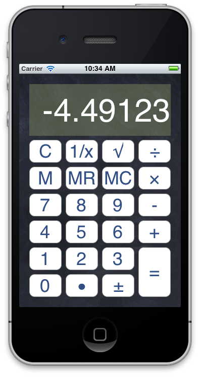

Project 1Calculator
Due Date
Thursday, February 21, 2013 by 11:59 pm
Objectives
- Gain experience working with Xcode & Interface Builder
- Gain experience working with Objective-C
- Gain experience with MVC
- Gain experience with Target/Action
- Build a functional application from start to finish
Description
You will build a basic calculator that supports the standard arithmetic
operations–+, -, x, /. It will behave just like the Mac OS
calculator. (I strongly encourage you to use it while you program your
application, so that you can see what to expect. It can be found in
/Applications/Calculator.app.)
Additionally, your calculator will support a square root key and 1/x key
which will perform those operations on the value that is displayed.
Finally, your calculator will support the following memory operations–store,
recall, clear.
You will design your calculator for the iPhone/iPod Touch.
An example calculator might look like this:

Expectations
- You are expected to complete this assignment individually.
- You are expected to write your program in the MVC pattern.
- You are expected to share target/actions where appropriate. (For example,
you will not have a separate action for each of the number buttons.)
- You are expected to refer to the buttons through their
tag identifier and
not the button title. (Your buttons need to easily accommodate images as
buttons, and not just the standard “rounded rectangle” type. If you rely
on the title, you might get into trouble here.)
- Your program will compile and run without errors or warnings.
- Your program will not crash for any reason, especially for any “error
actions” such as divide by zero, square root of a negative value, or typing
an operation before a value.
- You will implement the calculator display as a UILabel (not a UITextField).
- Your input keys will all be implemented with UIButtons.
- Code is clean and easy to read.
Required Features
- Entry/display of any digits 0 - 9
- Accommodate up to at least 10 digits
- Do not display leading zeros when absolute value is greater than 1
(ex. 03.4)
- Entry/display of floating point numbers
- Display leading zero when absolute value is less than 1 (ex. 0.5)
- Do not allow entry of multiple decimal points
- Entry of negative/positive numbers
- You will have a +/- key
- Pressing the key will toggle the sign of the displayed value
- Support of all basic arithmetic operations–
+, -, x, /.
- Do not crash if divide by 0 is attempted (you can decide how to handle this case)
- Support the sequence of
3 + 4 + 8 =
- After the entry of the second
+ the display will change to the result
of 3 + 4, then when the = is pressed the display will show 15
- You are not required to handle the order of operation with an
entry such as
3 + 4 * 2 = You will notice that most calculators
do return the result of 11 for this.
- Support a “Clear” key which will clear the display
- Support for memory operations
- Store the displayed value in memory
- Recall the value in memory to display
- Clear the value in memory
- Support for the key
square root
- Support for the key
1/x
Bonus Features
You are welcomed and encouraged to add additional features to your calculator.
I will award extra credit for well implemented features. Some possible
suggestions are:
- sin, cos, tan (radians and/or degrees)
- proper handling of
3 + 4 * 2
y^x supportmemory plus keymemory minus key- add a backspace key
- add a key for constants like pi
- parenthesis support
- add sound effects when the keys are pressed
- add an indication of the “active operation”
- pleasing user interface
- Add universal support–iPhone and iPad
- Add rotation support
- Use your imagination
Tips
- You may want to investigate the
NSString method rangeOfString: in order
to determine if a decimal point already exists.
- When determining what should be in the model, and what should go into the
controller, ask yourself how your program might be different if the user
interface were the command line. The model shouldn’t change between a CLI
or a GUI.
- Start early!
Deliverables
By the due date/time you are expected to have committed your working calculator
project to your private github repository for CSCI 567 at the location
/project_1/Calculator/
The entire Xcode project will be committed. (It is recommended that you add the
build files which can be regenerated to your .gitignore file.)
Late assignments will NOT be accepted.